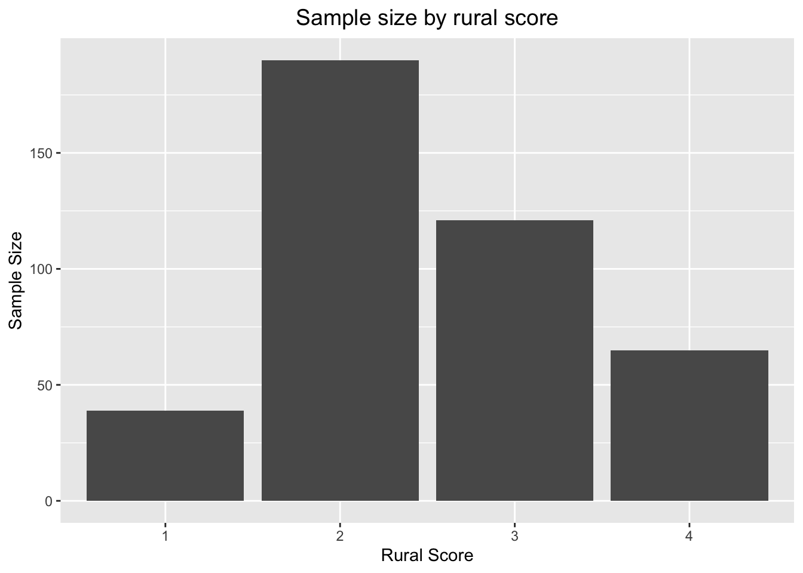
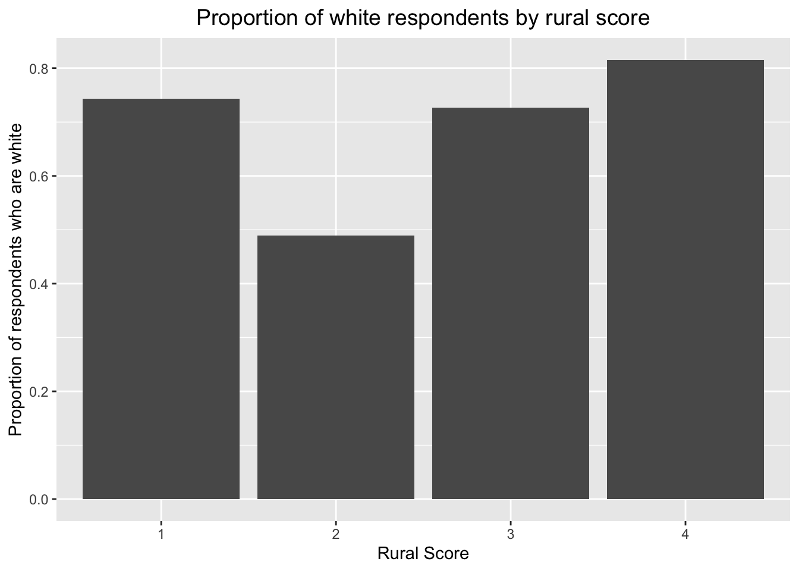

5 Sample Sizes across key demographics
5.1 Conclusions from this analysis
- Caucasians make up the bulk of responses for all levels of rurality. This is notably untrue in Durham, which is one of three counties that has a rural score of 2.
- 74% of the Durham participants surveyed were black.
- 59 out of of 89 (66% of) Black Respondents are from Durham.
5.2 Analysis
The following charts were designed to inform the reader as they process the other graphics in this document and want to get a rough idea of sample-sizes that were used for any calculation.
Let’s kick it off with a quick look at the distribution of race and rurality and their intersection.


74% of the Durham participants surveyed were black. This may have skewed the racial distribution in Durham, but provided a significant boost to the representation of black Americans in the survey overall, given that 59 (66%) of the 89 African Americans who responded to our survey were from Durham.
Figure 5.1: 74% of the Durham participants surveyed were black.
I’m not sure I know how to compare this to what one might expect that we would get from a random sample of participants, unless we have a breakdown of demographics for all participants, which I don’t think we have.
Figure 5.2: 59 out of of 89 (66% of) Black Respondents are from Durham.